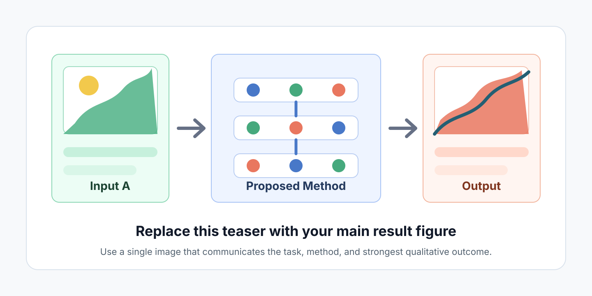
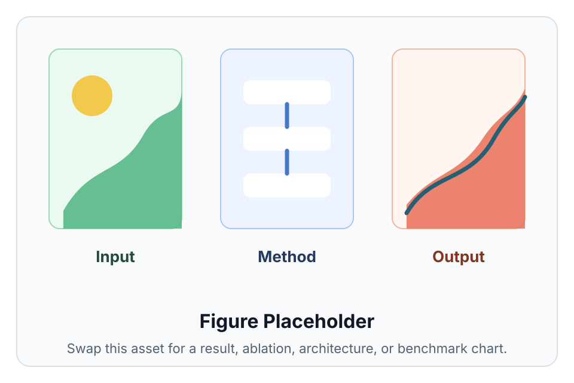

Contribution 1
Summarize the core technical idea in one short sentence.
Replace this sentence with the clearest one-line claim of the paper. It should tell readers what problem you solve, what makes the approach different, and why the result matters.
1Institution One 2Institution Two

Overview
Paste the paper abstract here. Keep the website version identical to the paper when possible, then use the surrounding sections to make the contribution easier to scan. This paragraph is a placeholder for the problem statement, method, experiments, and conclusion.
Summarize the core technical idea in one short sentence.
State the main empirical result, benchmark improvement, or qualitative capability.
Point readers to the released dataset, model, code, or demo when available.
Approach
Define the input data, target output, supervision, and assumptions.
Describe the new module, optimization objective, pipeline, or inference procedure.
Explain how the method is applied and what readers should expect from the result.
Evidence
Add qualitative comparisons, quantitative tables, ablations, and failure cases. Replace each placeholder image with a figure exported from the paper or supplementary material.

Media
Embed a YouTube/Vimeo iframe, WebGL demo, or short hosted video here. Keep the first frame informative so readers understand the interaction before pressing play.
Reference
@inproceedings{yourpaper2026,
title = {Paper Title Goes Here},
author = {First Author and Second Author and Third Author and Senior Author},
booktitle = {Conference or Journal Name},
year = {2026}
}Notes
Add funding, collaborator, dataset, compute, and template acknowledgements here. Remove this section if it is not needed.